专题03 数轴相关动点压轴题01（4种类型32道）

考点01 数轴动点定值问题
考点02 数轴动点最值问题
考点03 数轴动点存在性问题
考点04 折线数轴动点问题

考点01 数轴动点定值问题
1．已知：在一条东西向的双轨铁路上迎面驶来一快一慢两列火车，快车长 (单位长度)，慢车长
(单位长度)，慢车长
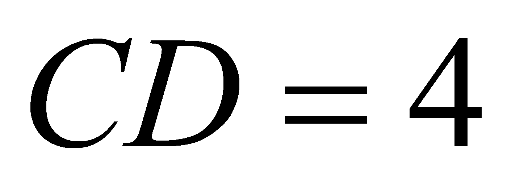
(单位长度，设正在行驶途中的某一时刻，如图，以两车之间的某点0为原点，取向右方向为正方向画数轴，此时快车头A在数轴上表示的数是a，慢车头C在数轴上表示的数是c.若快车 以6个单位长度/秒的速度向右匀速继续行驶，同时慢车
以6个单位长度/秒的速度向右匀速继续行驶，同时慢车 以2个单位长度/秒的速度向左匀速继续行驶，且a、c分别是多项式
以2个单位长度/秒的速度向左匀速继续行驶，且a、c分别是多项式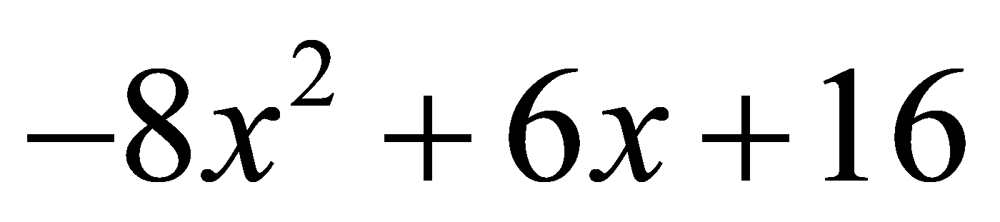
的二次项系数和常数项.
(1)求此时刻快车头A与慢车头C之间相距多少单位长度?
(2)从此时刻开始算起，问再行驶多少秒钟两列火车的车头 相距8个单位长度?
相距8个单位长度?
(3)此时在快车上有一位爱动脑筋的乘客——明德少年P，他发现行驶中有一段时间t秒钟，他的位置P到两列火车头的距离和加上到两列火车尾 的距离和是一个不变的值(即
的距离和是一个不变的值(即 为定值).你认为明德少年P发现的这一结论是否正确?若正确，求出这个时间及定值；若不正确，请说明理由.
为定值).你认为明德少年P发现的这一结论是否正确?若正确，求出这个时间及定值；若不正确，请说明理由.
2．如图，已知线段 ，线段在直线上运动（A在B左侧，C在D左侧），若
，线段在直线上运动（A在B左侧，C在D左侧），若
(1)求线段 的长．
的长．
(2)若点M，N分别为线段
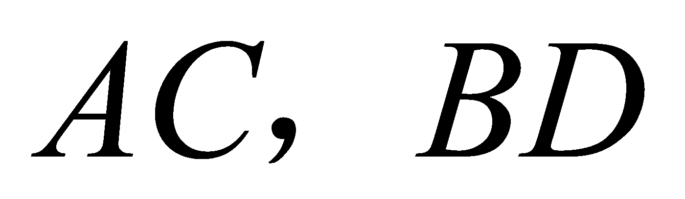
的中点，且 ，求线段
，求线段 的长；
的长；(3)当运动到某一时刻时，点D与点B重合，点P是线段延长线上任意一点，则 是一个定值，请加以说明．
是一个定值，请加以说明．
3．如图，数轴上点 、
、 分别对应数
分别对应数 、
、 ，其中
，其中 ，
， ．
．
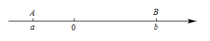
(1)当 ，
， 时，线段的中点对应的数是_________．
时，线段的中点对应的数是_________．
(2)若该数轴上另有一点 对应着数
对应着数 ．
．
①当 ，
， ，且时，求代数式
，且时，求代数式 的值；
的值；
②．且 时，小明通过演算发现代数式
时，小明通过演算发现代数式 是一个定值，老师点评：小明同学的演算发现还不完整！请你通过演算解释为什么“小明的演算发现”是不完整的？
是一个定值，老师点评：小明同学的演算发现还不完整！请你通过演算解释为什么“小明的演算发现”是不完整的？
4．如图，已知线段 ，
， ，线段在直线上运动（点在点的左侧，点
，线段在直线上运动（点在点的左侧，点 在点
在点 的左侧），若
的左侧），若
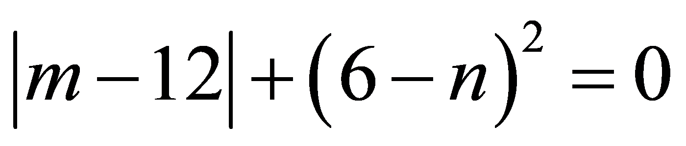
．（1）求线段，的长；
（2）若点， 分别为线段，
分别为线段， 的中点，，求线段的长；
的中点，，求线段的长；
（3）当运动到某一时刻时，点与点重合，点 是线段的延长线上任意一点，下列两个结论：①
是线段的延长线上任意一点，下列两个结论：① 是定值，②是定值，请选择你认为正确的一个并加以说明．
是定值，②是定值，请选择你认为正确的一个并加以说明．

5．如图，在数轴上点表示数，点示数，点表示数 ，的相反数是
，的相反数是 ，且、满足
，且、满足 ．
．

(1) ________；
________； ________；
________； ________；
________；
(2)若将数轴折叠，使得点与点重合，则点与数________表示的点重合；若数轴上有一点为线段的三等分点（点在线段内），则点表示的数是________；
(3)点、、开始在数轴上运动，若点以每秒 个单位长度的速度向左运动，同时，点和点分别以每秒
个单位长度的速度向左运动，同时，点和点分别以每秒 个单位长度和
个单位长度和 个单位长度的速度向右运动，假设
个单位长度的速度向右运动，假设 秒钟过后，若点与点之间的距离表示为，点与点之间的距离表示为
秒钟过后，若点与点之间的距离表示为，点与点之间的距离表示为 ，是否存在常数
，是否存在常数 ，使
，使
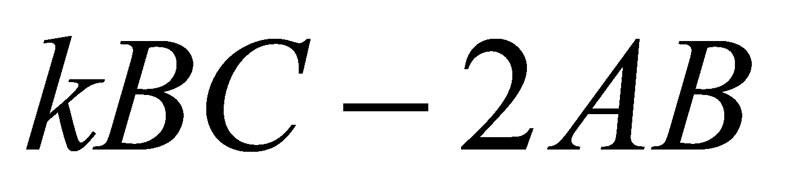
为定值，若存在，求的值；若不存在，请说明理由．6．我们规定：对于数轴上不同的三个点M，N，P，当点M在点N右侧时，若点P到点M的距离恰好为点P到点N的距离的n倍，且n为正整数，（即），则称点P是“
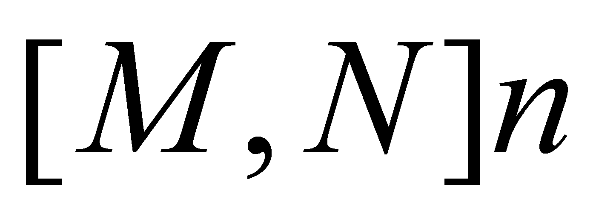
关联点”如图，已知在数轴上，原点为O，点A，点B表示的数分别为4， ．
．

(1)原点O （填“是”或“不是”）“
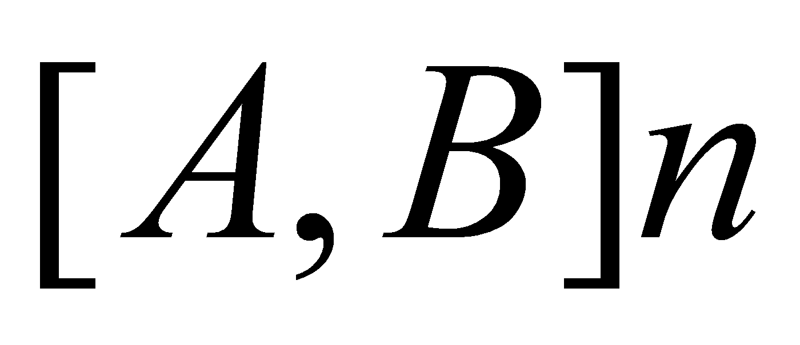
关联点”；(2)若点C是“ 整2关联点”，则点C所表示的数 ；
整2关联点”，则点C所表示的数 ；
(3)若点A沿数轴向右运动，每秒运动1个单位长度，同时点B沿数轴向左运动，每秒运动2个单位长度，则运动时间为 秒时，原点O恰好是“关联点”，此时n的值为 ．
(4)点Q在A，B之间运动，且不与A，B两点重合，作“ 关联点”，记为
关联点”，记为 ，作“
，作“ 关联点”，记为
关联点”，记为 ，且满足，分别在线段
，且满足，分别在线段 和
和 上．当点Q运动时，若存在整数m，n，使得式子
上．当点Q运动时，若存在整数m，n，使得式子 为定值，求出m，n满足的数量关系．
为定值，求出m，n满足的数量关系．
7．若点 在数轴上对应的数分别为
在数轴上对应的数分别为 ，其中是最小的正整数，
，其中是最小的正整数， 满足
满足 ，请回答问题：
，请回答问题：

(1)请直接写出的值；
(2)在数轴上是否存在点，使得 ？若存在，求出点对应的数；若不存在，请说明理由；
？若存在，求出点对应的数；若不存在，请说明理由；
(3)若点同时开始在数轴上分别以每秒1个单位长度，每秒3个单位长度，每秒4个单位长度沿着数轴负方向运动．经过 秒后，是否存在常数，使得
秒后，是否存在常数，使得 为定值？若存在，请求出的值以及这个定值；若不存在，请说明理由．
为定值？若存在，请求出的值以及这个定值；若不存在，请说明理由．
8．已知：在一条东西向的双轨铁路上迎面驶来一快一慢两列火车，快车长 （单位长度），慢车长
（单位长度），慢车长 （单位长度），设正在行驶途中的某一时刻，如图，以两车之间的某点
（单位长度），设正在行驶途中的某一时刻，如图，以两车之间的某点 为原点，取向右方向为正方向画数轴，此时快车头在数轴上表示的数是，慢车头在数轴上表示的数是．若快车以6个单位长度/秒的速度向右匀速行驶，同时慢车以2个单位长度/秒的速度向左匀速行驶，
为原点，取向右方向为正方向画数轴，此时快车头在数轴上表示的数是，慢车头在数轴上表示的数是．若快车以6个单位长度/秒的速度向右匀速行驶，同时慢车以2个单位长度/秒的速度向左匀速行驶，
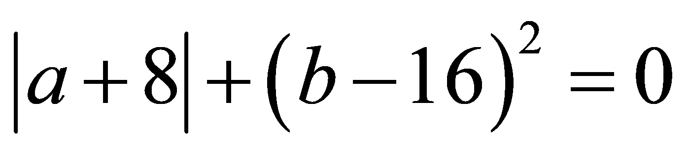
．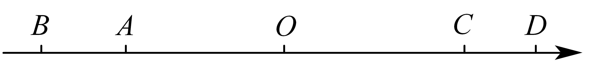
(1) ， ．
(2)从此时刻开始算起，问再行驶多少秒钟两列火车行驶到车头 相距8个单位长度？
相距8个单位长度？
(3)此时在快车上有一位爱动脑筋的七年级学生乘客，他发现行驶中有一段时间秒钟，他的位置到两列火车头 的距离和加上到两列火车尾
的距离和加上到两列火车尾
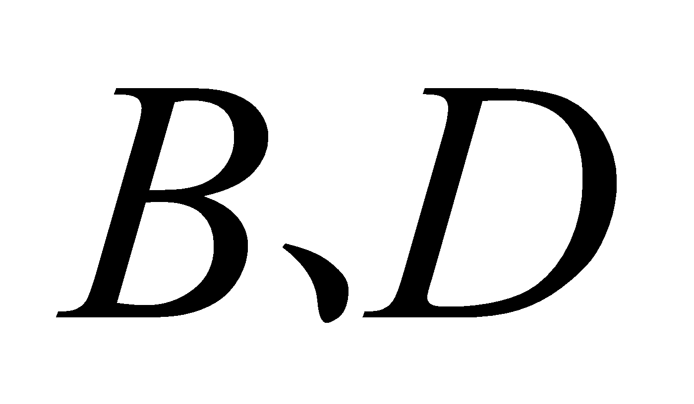
的距离和是一个不变的值（即 为定值）．你认为学生发现的这一结论是否正确？若正确，求出这个时间定值；若不正确，请说明理由．
为定值）．你认为学生发现的这一结论是否正确？若正确，求出这个时间定值；若不正确，请说明理由．考点02 数轴动点最值问题
9．如图，有理数，分别对应数轴上的点，，且，满足
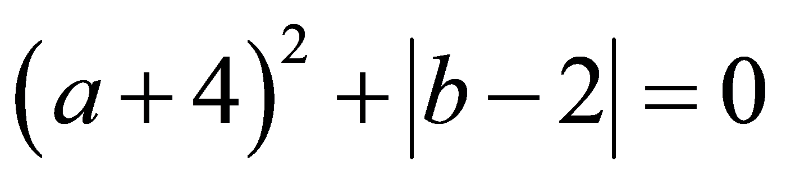
．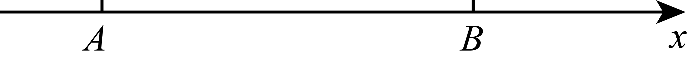
(1)直接写出，的值：______；______；
(2)若动点， 分别从，同时出发，以每秒4个单位长度的速度沿数轴向右运动，以每秒2个单位的长度的速度沿数轴向右运动，当，相遇时停止运动，当为何值时，
分别从，同时出发，以每秒4个单位长度的速度沿数轴向右运动，以每秒2个单位的长度的速度沿数轴向右运动，当，相遇时停止运动，当为何值时， ；
；
(3)我们规定，若在线段上存在满足 ，则我们称点是线段的一个分点．点从线段上的2分点出发，以每秒1个单位长度在数轴上按以下规律往返运动：第一回合，从点到点，再从点到点回到点；第二回合，从点到的中点，再从点到
，则我们称点是线段的一个分点．点从线段上的2分点出发，以每秒1个单位长度在数轴上按以下规律往返运动：第一回合，从点到点，再从点到点回到点；第二回合，从点到的中点，再从点到 的中点
的中点 回到点；第三回合，从点到的中点
回到点；第三回合，从点到的中点 ，再从点到
，再从点到 的中点
的中点 回到点
回到点
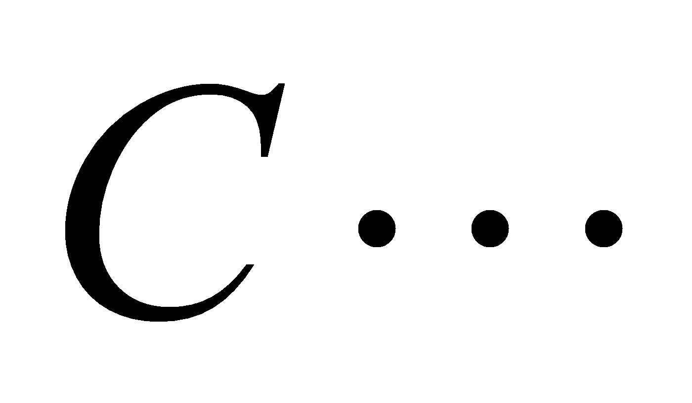
，如此循环下去，若第秒时满足 ，求的最大值．
，求的最大值．10．已知数轴上有A，B两个点，分别表示有理数 ，4．
，4．
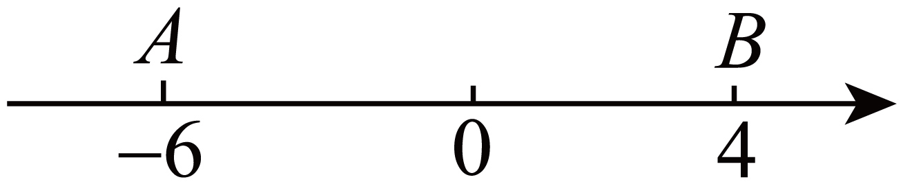
(1)数轴上点A到点B的距离为______；数轴上到点A，B的距离相等的点的位置表示的有理数为______；
(2)若有动点P从点A出发，以每秒1个单位的速度向右移动，设移动时间为秒．用含的式子分别表示P点到点A和点B的距离．
(3)若 ，则x的取值范围是______；
，则x的取值范围是______；
(4)若x表示一个有理数，求式子
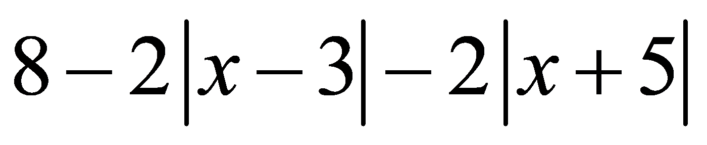
最大值．11．如图 两点之间相距3个单位长度，
两点之间相距3个单位长度， 两点之间相距7个单位长度，点、在数轴上表示的数分别为．
两点之间相距7个单位长度，点、在数轴上表示的数分别为．
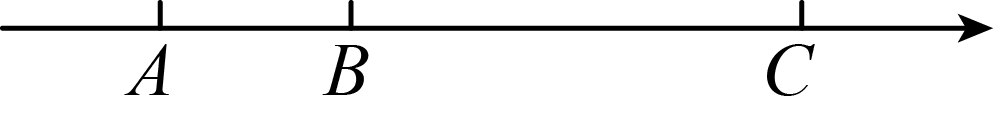
(1)若以为原点，求 ．
．
(2)若以为原点，求 ．
．
(3)现有一动点从点开始沿数轴的正方向运动到达点停止：
①设点到两点的距离之和为，求的最小值；
②设点到三点的距离之和为 ，直接写出的最大值与最小值．
，直接写出的最大值与最小值．
12．已知，，三点在数轴上的位置如图，它们表示的数分别是，，．
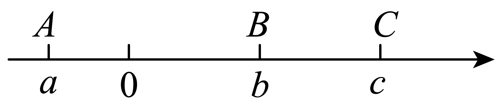
(1)填空
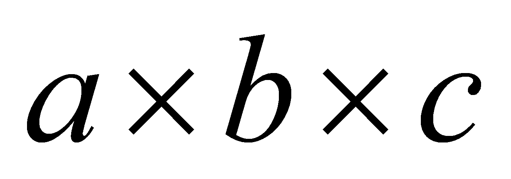
0，
 ，
， 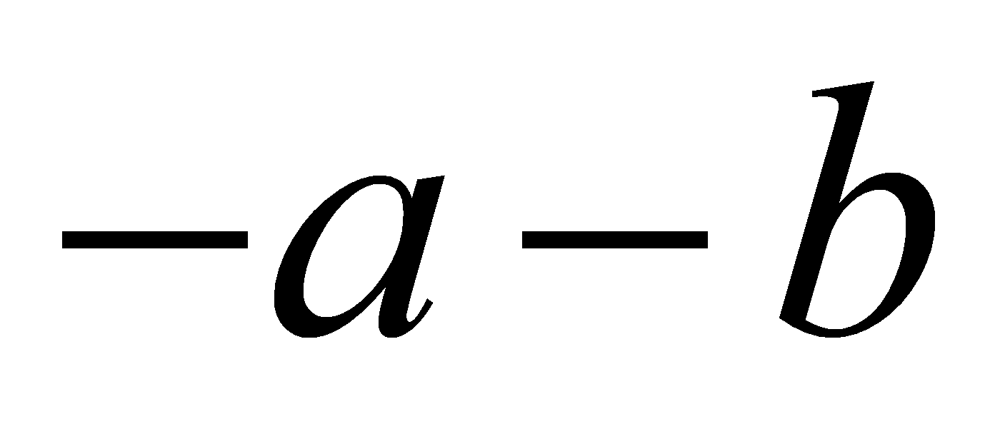
0 （填“ ”，“
”，“ ”或“
”或“ ”）
”）(2)若 且点到点，的距离相等，当
且点到点，的距离相等，当 时，求的值．
时，求的值．
(3)在（2）的条件下，若是数轴上一个动点，设点表示的数为，当点在运动过程中，求 的最小值及此时的值．
的最小值及此时的值．
13．数轴是一个非常重要的数学工具，它使数和数轴上的点建立起对应关系，揭示了数与点之间的内在联系，它是“数形结合”的基础．例如：从“形”的角度看： 可以理解为数轴上表示2和1的两点之间的距离；
可以理解为数轴上表示2和1的两点之间的距离；
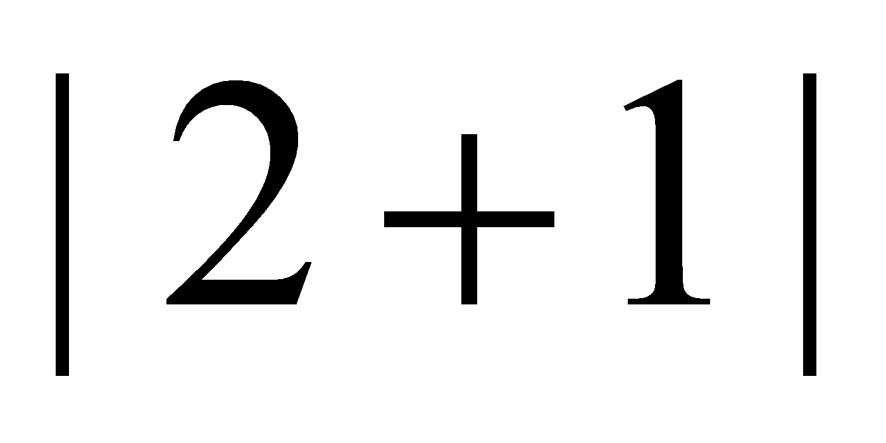
可以理解为数轴上表示2与的两点之间的距离．从“数”的角度看：数轴上表示2和 的两点之间的距离可列式表示为：
的两点之间的距离可列式表示为：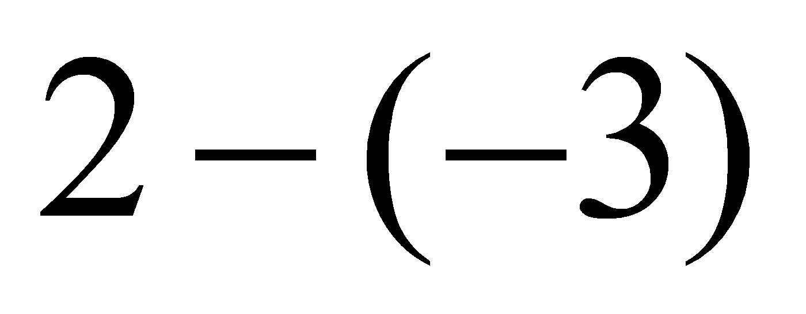
．根据以上阅读材料探索下列问题：
(1)数轴上表示2和的两点之间的距离是______；
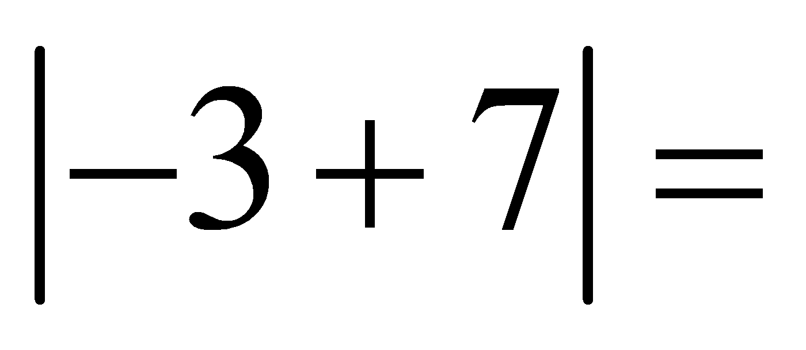
______； _____；（直接写出最终结果）
_____；（直接写出最终结果）(2)若数轴上表示x和两点之间的距离是5，则x的值为______；
(3)若x为数轴上某动点表示的数，则式子
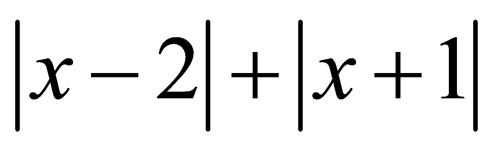
有最小值吗？若有，直接写出最小值，若没有，写出理由．14．数轴是一个非常重要的数学工具，它使数和数轴上的点建立起对应关系，揭示了数与点之间的内在联系，它是“数形结合”的基础．
例如：从“形”的角度看： 可以理解为数轴上表示3和1的两点之间的距离；
可以理解为数轴上表示3和1的两点之间的距离；
 可以理解为数轴上表示3与的两点之间的距离．
可以理解为数轴上表示3与的两点之间的距离．
从“数”的角度看：数轴上表示4和的两点之间的距离可用代数式表示为：
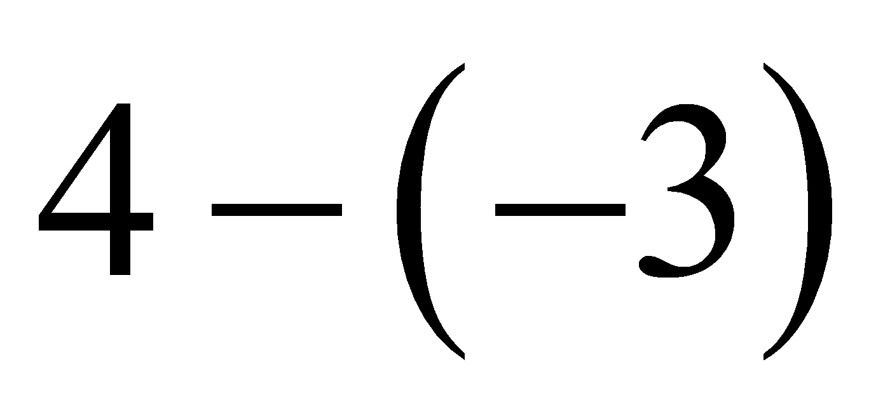
．根据以上阅读材料探索下列问题：
(1)数轴上表示2和 的两点之间的距离是______；
的两点之间的距离是______； ______；
______；
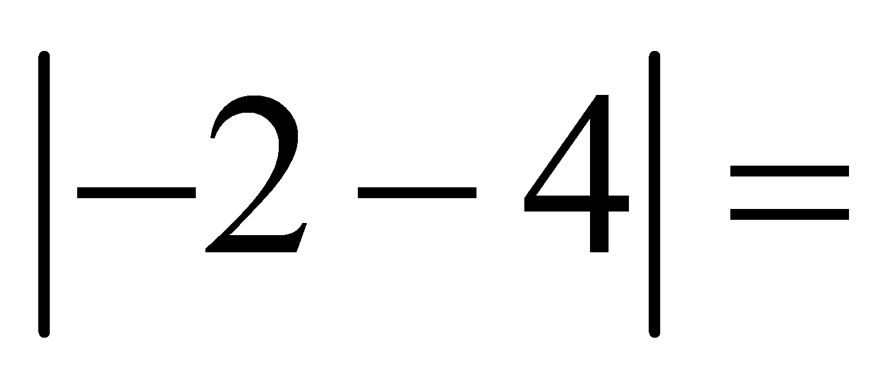
______；（直接写出最终结果）(2)等式 几何意义______，则
几何意义______，则 的值为______；
的值为______；
(3)若为数轴上某动点表示的数，则式子 有最小值吗？若有求出最小值，若没有，写出理由．
有最小值吗？若有求出最小值，若没有，写出理由．
15．预备知识：在数学中，把点与点之间的距离用表示
如图，在数轴上点表示数
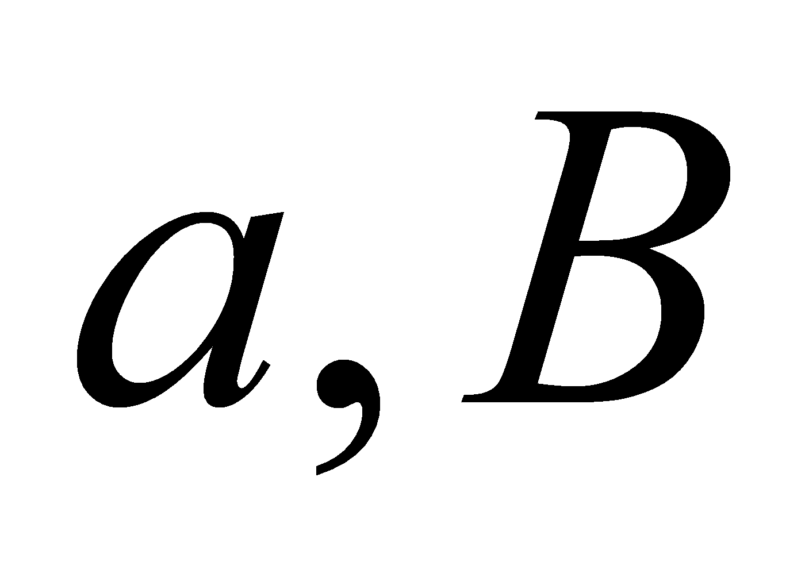
点表示数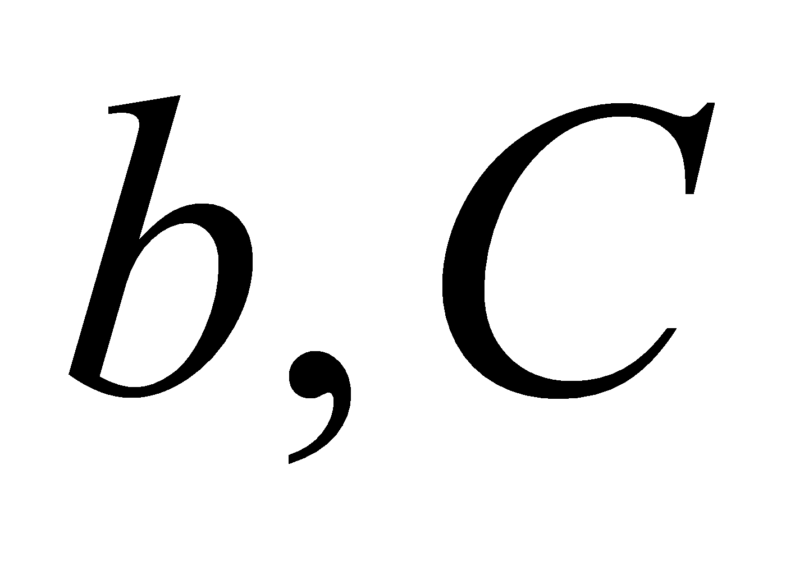
点表示数，已知数是最小的正整数，且满足 ．
．
(1) ， ， ；
(2)点开始在数轴上运动，若点以每秒1个单位长度的速度向左运动，同时，点和点分别以每秒
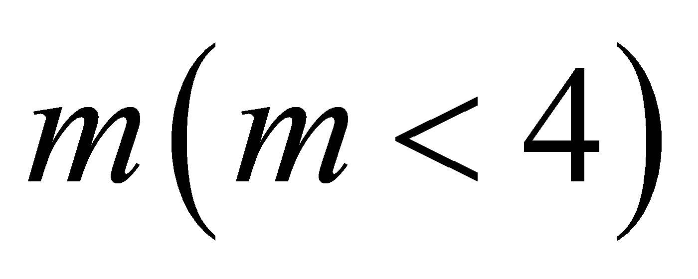
个单位长度和4个单位长度的速度向右运动，运动秒钟后，求 三点在数轴上所表示的数（用含
三点在数轴上所表示的数（用含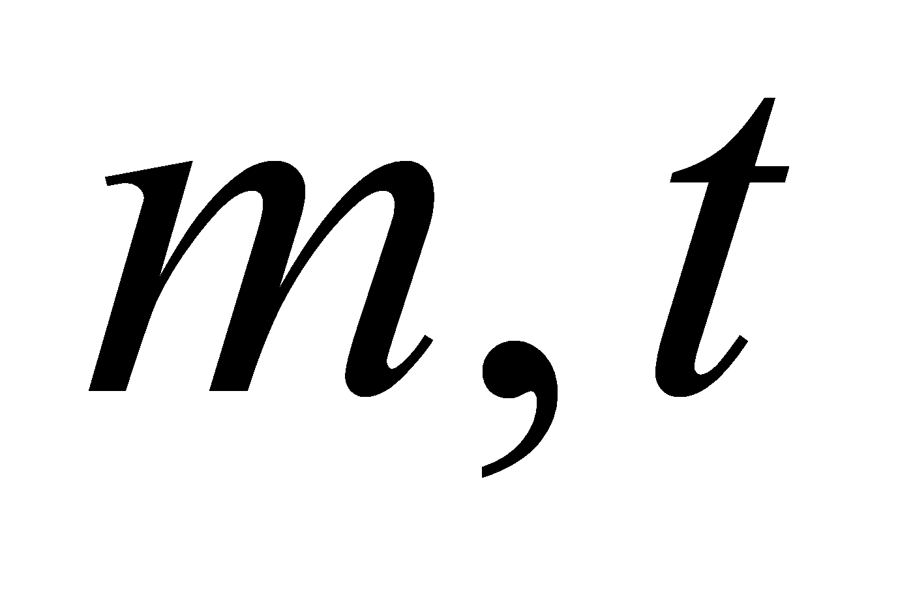
的式子表示），若在此过程中， 的值保持不变，求的值．
的值保持不变，求的值．(3)在此数轴有上一动点对应的数为 ，求
，求 的最小值．
的最小值．
16．问题提出
(1)点，在数轴上分别表示实数，，，两点之间的距离可表示为 ．
．
代数式 的几何意义是表示有理数的点到表示数2的点与表示数的点的距离之和．利用几何意义，可求得的最小值为___________．
的几何意义是表示有理数的点到表示数2的点与表示数的点的距离之和．利用几何意义，可求得的最小值为___________．
(2)问题探究
如图，点，，，在数轴上分别表示的数为 ，，，，是数轴上一动点，从点出发以每秒个单位长度的速度向右运动，当点出发___________秒后，到，，三点的距离和最小，此时点所处位置对应的数字为___________，此时到，，三点的距离之和的最小值为___________．
，，，，是数轴上一动点，从点出发以每秒个单位长度的速度向右运动，当点出发___________秒后，到，，三点的距离和最小，此时点所处位置对应的数字为___________，此时到，，三点的距离之和的最小值为___________．

(3)问题解决
同心抗疫，情暖居民．疫情防控期间，某一直线沿街有9个小区，依次记为
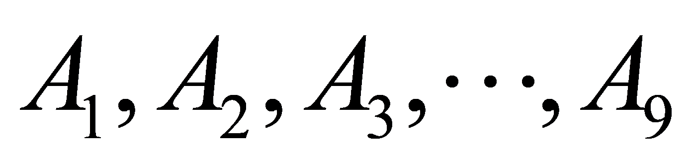
，假定相邻两个小区间隔相同，将这个间隔记为100米．社区想为这9个小区的居民提供防疫物资，决定在路旁建立一个物资供应站．请问点选在何处，才能使这9个小区的居民到点（物资供应站）的距离总和最小？最小值是多少？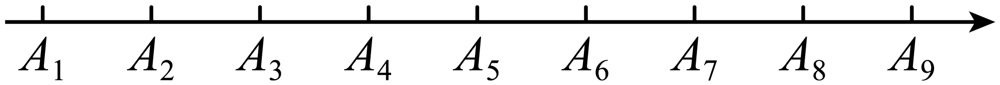
考点03 数轴动点存在性问题
17．如图，点A，O，B在数轴上表示的数分别为，0，10，点C是数轴上一动点，其表示的数为x．
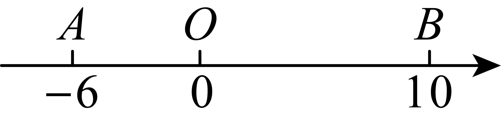
(1)若点C到A、B两点的距离相等，点C表示的数为_______，点C在数轴______（填“正”或“负”）半轴；
(2)数轴上是否存在点C，使得点C到点A的距离恰好是点A到点B距离的 ？若存在，求出x的值，若不存在，说明理由．
？若存在，求出x的值，若不存在，说明理由．
18．如图，已知数轴上两点 对应的数分别为、
对应的数分别为、 ，点P为数轴上一动点，其对应的数为x．
，点P为数轴上一动点，其对应的数为x．
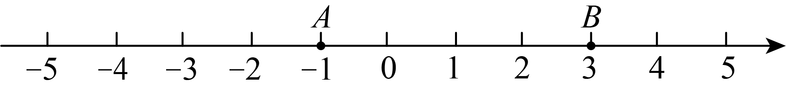
(1)（填空）若点P从B开始向左移动6个单位长度，则 ______．若点P向左移动到与点A距离3个单位长度时，则点P对应的数是______．
______．若点P向左移动到与点A距离3个单位长度时，则点P对应的数是______．
(2)（填空）当点P从点B以每秒3个单位长度的速度向右移动，则t秒后P点表示的数是______，此时若将数轴折叠，使与3表示的点重合，则点P与数______表示的点重合（用含t的式子表示）；
(3)若点P从A点出发沿数轴的负方向移动，速度为每秒1个单位长度，同时点Q从B出发同向移动，速度为每秒3个单位长度，设运动时间为t，在移动过程中，是否存在某一时刻t，使得点Q与点P之间的距离 等于2个单位长度，若存在，请求出t的值；若不存在，请说明理由．
等于2个单位长度，若存在，请求出t的值；若不存在，请说明理由．
19．我们把数轴上两点之间的距离用表示这两点的大写字母一起标记，比如，点A与点B之间的距离记作．如图：在数轴上点A表示数a，点B表示数b，点C表示数c，且a、b满足
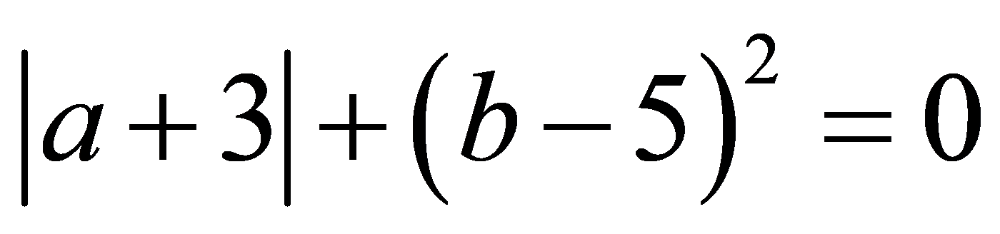
，将数轴沿点C折叠，点A和点B重合．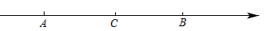
(1) ， ， ；
(2)点P是数轴上 之间的一个动点（不包括
之间的一个动点（不包括 ），点P表示数x．现将数轴沿点P折叠，数轴上与点A重合的点记为D．
），点P表示数x．现将数轴沿点P折叠，数轴上与点A重合的点记为D．
①若点P在 之间，则
之间，则 ，
，
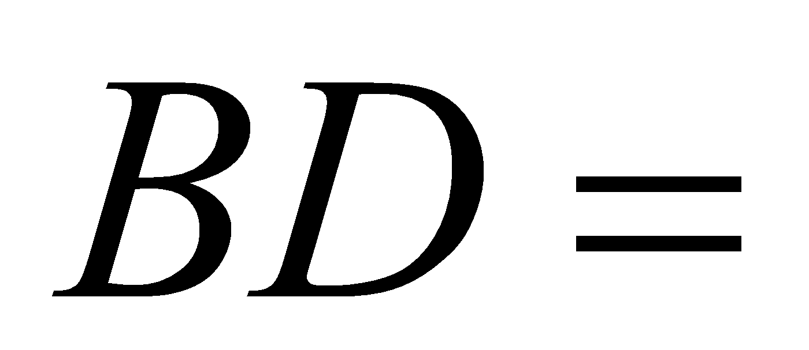
（用含x的代数式表示）；②随着点P的运动，都发生变化，问 和是否存在一定的倍数关系？试写出说明过程．
和是否存在一定的倍数关系？试写出说明过程．
20．如图，已知、、是数轴上的三点，点表示的数是6，点与点之间的距离是4，点与点的距离是12，点为数轴上一动点．
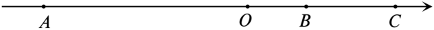

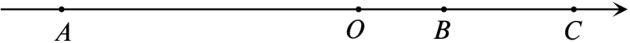
(1)数轴上点表示的数为_______，点表示的数为_______；
(2)数轴上是否存在一点，使点到点、点的距离和为16，若存在，请求出此时点所表示的数；若不存在，请说明理由．
21．如图，数轴上A，B两点对应的数分别
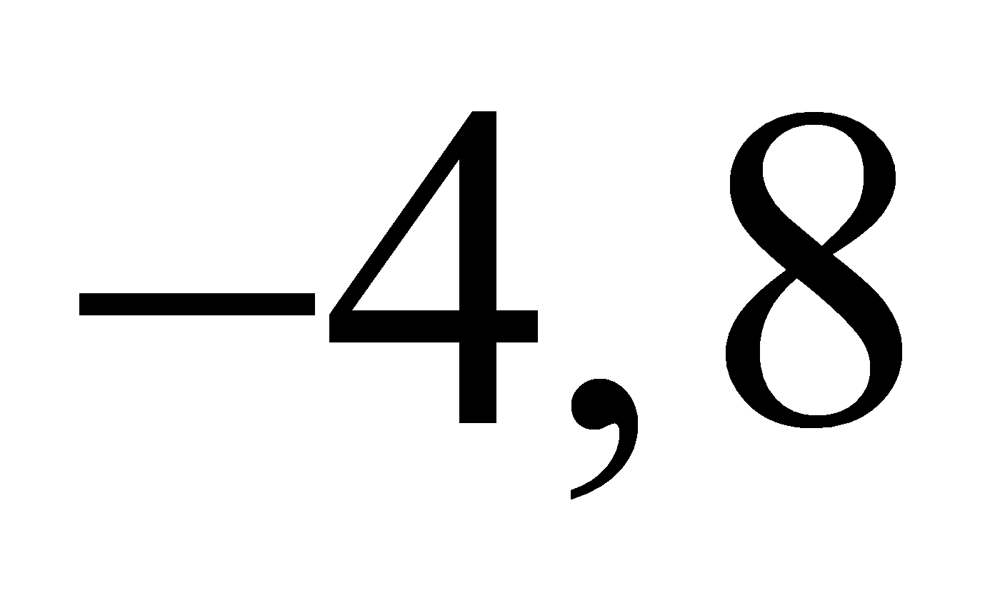
．有一动点P从点A出发第一次向右运动1个单位长度；然后在新的位置第二次运动，向左运动2个单位长度；在此位置第三次运动，向右运动3个单位长度，…按照如此规律不断地左右运动．
(1)当点P运动到第5次时，求点P所对应的有理数；
(2)当点P运动到第2021次时，求点P所对应的有理数；
(3)琪琪发现：点P在线段AB之间运动时，恰好存在某一个位置，使点P到点B的距离是点P到点A的距离的3倍．请你验证琪琪的说法是否正确？
22．已知在纸面上有一数轴（如图），折叠纸面．

(1)若1表示的点与表示的点重合，则表示的点与数___________表示的点重合．
(2)若表示的点与5表示的点重合，回答以下问题：
①7表示的点与数___________表示的点重合；
②若数轴上、两点之间的距离为12（在的左侧），且、两点经折叠重合，求A、B两点表示的数各是多少？
③在②的条件下，数轴上是否存在点，使点到点、点的距离之和为14？若存在，请求点所对应的数值；若不存在，说明理由．
23．如图，已知 两点在数轴上，点在点的左侧，点表示的数为
两点在数轴上，点在点的左侧，点表示的数为 ，点到原点的距离是点到原点的距离的4倍．
，点到原点的距离是点到原点的距离的4倍．
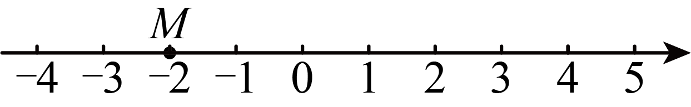
(1)求数轴上点表示的数；
(2)若点到点、点的距离相等，求点表示的数；
(3)若点与点之间的距离表示为 ，点与点之间的距离表示为，试探究在数轴上是否存在点，使得
，点与点之间的距离表示为，试探究在数轴上是否存在点，使得 ．若存在，请求出点表示的数是多少？若不存在，请说明理由．
．若存在，请求出点表示的数是多少？若不存在，请说明理由．
24．阅读下面材料：点、在数轴上分别表示有理数、，在数轴上、两点之间的距离．回答下列问题：
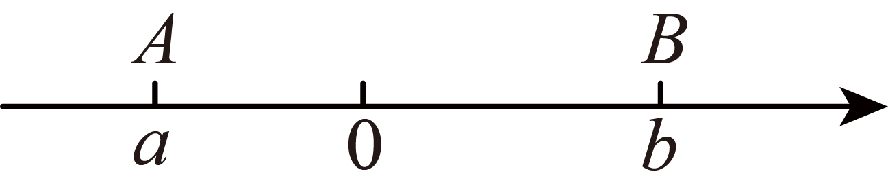
(1)数轴上表示和1两点之间的距离是______，数轴上表示和2的两点之间的距离是______；
(2)数轴上表示和1的两点之间的距离为6，则表示的数为______；
(3)若表示一个有理数，则 有最小值吗？若有，请直接写出最小值；若没有，请说明理由．
有最小值吗？若有，请直接写出最小值；若没有，请说明理由．
(4)请你画出数轴，探究：是否存在数，使 ？如果存在，则在数轴上表示出来，并写出的值；如果不存在，简要说明理由．
？如果存在，则在数轴上表示出来，并写出的值；如果不存在，简要说明理由．
考点04 折线数轴动点问题
25．七年级数学兴趣小组成员自主开展数学微项目研究，他们决定研究“折线数轴”．
素材一：如图，将一条数轴在原点O，点B，点C处折一下，得到一条“折线数轴”．图中点A表示 ，点B表示12，点C表示24，点D表示36，我们称点A与点D在数轴上的“友好距离”为45个单位长度，并表示为
，点B表示12，点C表示24，点D表示36，我们称点A与点D在数轴上的“友好距离”为45个单位长度，并表示为
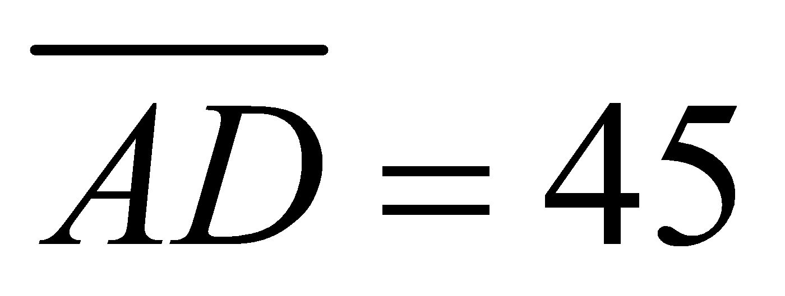
．素材二：动点P从点A出发，以3个单位长度/秒的初始速度沿着“折线数轴”向其正方向运动．当运动到点O与点B之间时，速度变为初始速度的
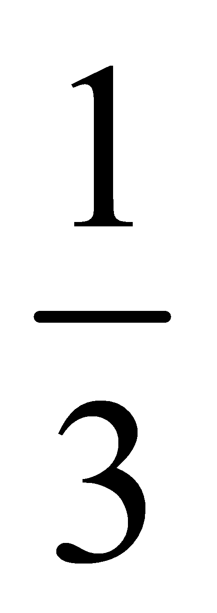
；当运动到点B与点C之间时，速度变为初始速度的3倍；经过点C后立刻恢复初始速度．
问题解决：
(1)动点P从点A运动至点B需要________秒；
(2)动点P从点A出发，运动t秒至点B和点C之间时，求点P表示的数（用含t的代数式表示）；
(3)动点P从点A出发，运动至点D的过程中某个时刻满足 时，求动点P运动的时间．
时，求动点P运动的时间．
26．如图1，已知点A、B、C、D在数轴上对应的数分别是a、b、c、24，其中a、b满足
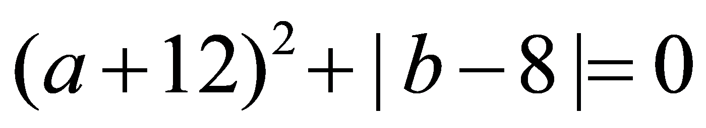
， ．
．
(1)填空：______，______，______；
(2)如图1，若点A、B分别同时以每秒2个单位长度、1个单位长度的速度匀速向右运动，设运动时间为t秒．问：当t为何值时，A、B之间的距离为5？
(3)如图2，将数轴在原点O、点B和点C处各折一下，得到一条“折线数轴”．动点P从点A出发．以每秒2个单位长度的速度沿“折线数轴”的正方向匀速运动至点D，同时，动点Q从点D出发以每秒4个单位长度沿着“折线数轴”的负方向变速运动，该点在平地保持初始速度不变，上坡时速度变为初始速度的一半，下坡时速度变为初始速度的两倍，设运动时间为t秒．若P、Q两点在点M处相遇，则点M表示的数为______．
27．如图，将一条数轴在原点和点处各折一下，得到一条“折线数轴”．图中点A表示 ，点表示10，点表示20，我们称点A和点在数轴上相距32个长度单位．动点从点A出发，以2单位
，点表示10，点表示20，我们称点A和点在数轴上相距32个长度单位．动点从点A出发，以2单位 秒的速度沿着“折线数轴”的正方向运动，从点运动到点期间速度变为原来的一半，之后立刻恢复原速，当点到终点时停止运动：点出发同时，动点从点出发，以1单位秒的速度沿着数轴的负方向运动，从点运动到点期间速度变为原来的两倍，之后也立刻恢复原速．当点到达点A时停止运动．设运动的时间为秒，问：
秒的速度沿着“折线数轴”的正方向运动，从点运动到点期间速度变为原来的一半，之后立刻恢复原速，当点到终点时停止运动：点出发同时，动点从点出发，以1单位秒的速度沿着数轴的负方向运动，从点运动到点期间速度变为原来的两倍，之后也立刻恢复原速．当点到达点A时停止运动．设运动的时间为秒，问：
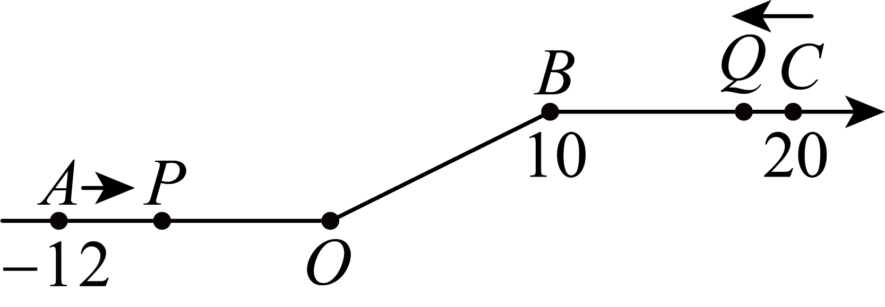
(1) 秒时，点在“折线数轴”上所对应的数是______；点到点的距离是______个单位长度；
秒时，点在“折线数轴”上所对应的数是______；点到点的距离是______个单位长度；
(2)动点从点运动至A点需要______秒；
(3)当为______时， 两点在数轴上相距的长度为3个单位？
两点在数轴上相距的长度为3个单位？
28．如图，将一条数轴在原点O和点B处各折一下，得到一条“折线数轴”．数轴上的点A，B，C分别表示 ，10，18，称点A，C在数轴上相距28个单位长度．动点P，Q同时开始运动，点P从点A出发，以2个单位长度/秒的速度沿“折线数轴”的正方向运动，在点
，10，18，称点A，C在数轴上相距28个单位长度．动点P，Q同时开始运动，点P从点A出发，以2个单位长度/秒的速度沿“折线数轴”的正方向运动，在点
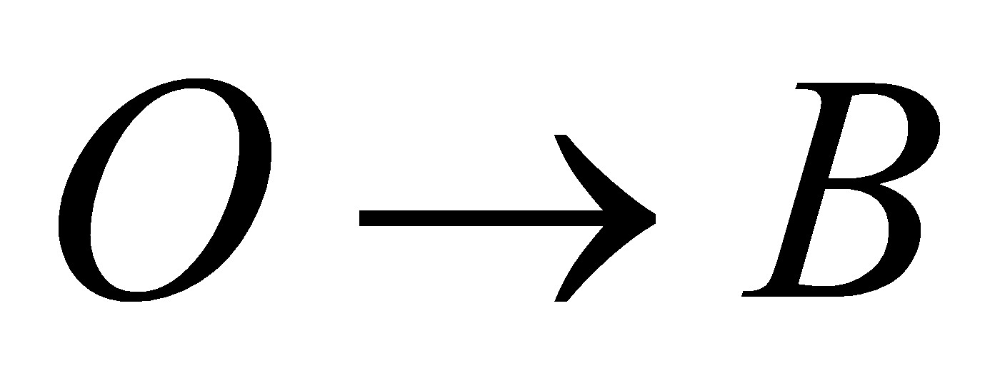
期间速度变为原来的一半，之后恢复原速，直至点C处停止运动；点Q从点C出发，以1个单位长度/秒的速度沿“折线数轴”的负方向运动，在点 期间速度变为原来的2倍，之后也恢复原速，直至点A处停止运动．设运动时间为t秒．
期间速度变为原来的2倍，之后也恢复原速，直至点A处停止运动．设运动时间为t秒．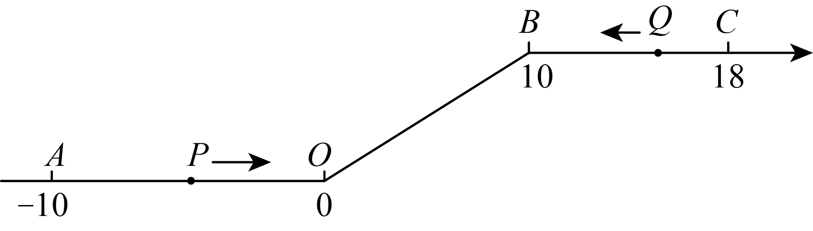
(1)当点P运动2秒时，点P在数轴上表示的数是_______；当点Q运动10秒时，点Q在数轴上表示的数是_______；
(2)动点P从点A运动至点C需要多少秒？
(3)P，Q两点何时相遇？相遇时，求出相遇点M所表示的数；
(4)在整个运动过程中，直接写出当t为何值时，P，Q两点在数轴上相距18个单位长度．
29．数轴上点表示 ．点表示
．点表示 ，点表示
，点表示 ，点表示
，点表示 ．如图，将数轴在原点和点、处各折一下，得到一条“折线数轴”．在“折线数上，把两点所对应的两数之差的绝对值叫这两点间的和谐距离．例如．点和点在折线数轴上的和调距离为
．如图，将数轴在原点和点、处各折一下，得到一条“折线数轴”．在“折线数上，把两点所对应的两数之差的绝对值叫这两点间的和谐距离．例如．点和点在折线数轴上的和调距离为 个单位长度，动点从点出发．以个单位秒的速度沿着折线数轴的正方向运动．从点运动到点期间速度变为原来的一半，过点后继续以原来的速座向终点运动，点从点出发的同时，点从点出发，一直以个单位秒的速度沿着“折线数轴”负方向向终点运动，其中一点到达终点时，两点都停止运动，设运动的时间为秒．
个单位长度，动点从点出发．以个单位秒的速度沿着折线数轴的正方向运动．从点运动到点期间速度变为原来的一半，过点后继续以原来的速座向终点运动，点从点出发的同时，点从点出发，一直以个单位秒的速度沿着“折线数轴”负方向向终点运动，其中一点到达终点时，两点都停止运动，设运动的时间为秒．

(1)当 秒时，、两点在折线数轴上的和谐距离为________；
秒时，、两点在折线数轴上的和谐距离为________；
(2)当 ________时，、两点在折线段
________时，、两点在折线段 上相遇；
上相遇；
(3)当________时，、两点在折线数轴上的和谐距离为个单位长度；
(4)当为几秒时，、两点在折线数轴上的和谐距离与、两点在折线数轴上的和谐距离相等？（请写出解题过程）
30．如图将一条数轴在原点O，点B，点C，点D出各折一下，得到“折线数轴”．图中点A表示 ，点B表示8，点C表示16，点D表示24，点E表示28．我们称点A和点E相距36个单位长度，动点P从A从出发，以每秒4个单位的速度沿着“折线数轴”的正方向移动，同时，动点Q从E出发以每秒3个单位的速度沿着“折线数轴”的负方向移动，两个点上坡时候的速度均是各自初始速度的一半，下坡时候的速度均是各自初始速度的2倍，平地则保持初始速度不变．当点P运动到点E时P点P停止运动，当点Q运动到点A时点Q停止运动，设：运动时间为t．问：
，点B表示8，点C表示16，点D表示24，点E表示28．我们称点A和点E相距36个单位长度，动点P从A从出发，以每秒4个单位的速度沿着“折线数轴”的正方向移动，同时，动点Q从E出发以每秒3个单位的速度沿着“折线数轴”的负方向移动，两个点上坡时候的速度均是各自初始速度的一半，下坡时候的速度均是各自初始速度的2倍，平地则保持初始速度不变．当点P运动到点E时P点P停止运动，当点Q运动到点A时点Q停止运动，设：运动时间为t．问：
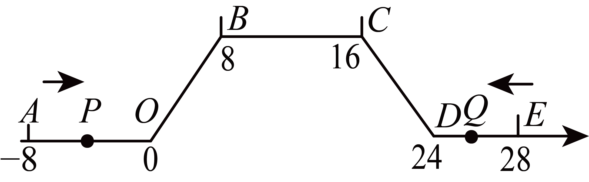
(1)动点P从点A运动到E点需要 秒，此时点Q对应的数是 ；
(2)P，Q两点在点M出相遇，求出相遇点M所对应的数是多少？
(3)求当t为何值时，P，B两点在这个上数轴上相距的长度与Q，D两点在这个数轴上相距长度相等．
31．如图，将一条数轴在原点 O 和点 B 处各折一下，得到一条“折线数轴”．点 A 表示，点 B 表示 12，点 C 表示 24，我们称点 A 和点 C 在数轴上相距 33 个单位长度．动点 P 从点 A 出发，以 2 个单位长度/秒的速度沿着“折线数轴”的正方向运动，从点 O 运动到点 B 期间速度变为原来的 1.5 倍，之后立刻恢复原速；同时，动点 Q 从点 C 出发，以 3 个单位长度/秒的速度沿着“折线数轴”的负方向运动，从点 B 运动到点 O 期间速度变为原来的  ，之后也立刻恢复原速．设运动的时间为t．问：
，之后也立刻恢复原速．设运动的时间为t．问：
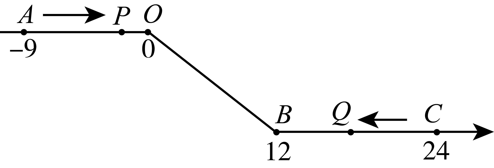
(1)动点 P 从点 A 运动至点 C 需要多少时间？
(2)当 P，Q 两点相遇时，相遇点 M 所对应的数是多少？
(3)当 t 为何值时，P，O 两点在数轴上相距的长度与 Q，B 两点在数轴上相距的长度相等？
32．如图，将一条数轴在原点O和点B处各折一下，得到一条“折线数轴”．图中点A表示﹣10，点B表示10，点C表示18，我们称点A和点C在数轴上相距28个长度单位，动点P从点A出发，以2单位/秒的速度沿着“折线数轴”的正方向运动，从点O运动到点B期间速度不变；点P从点A出发的同时，点Q从点C出发，以1单位/秒的速度沿着“折线数轴”的负方向运动，当点P到达B点时，点P、Q均停止运动．设运动的时间为t秒．问：
（1）用含t的代数式表示动点P在运动过程中距O点的距离；
（2）P、Q两点相遇时，求出相遇时间及相遇点M所对应的数是多少？
（3）是否存在P、O两点在数轴上相距的长度与Q、B两点在数轴上相距的长度相等时？若存在，请直接写出t的取值；若不存在，请说明理由．